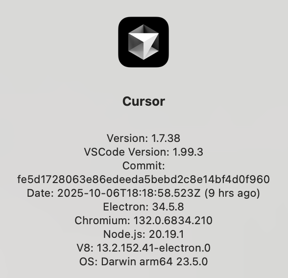
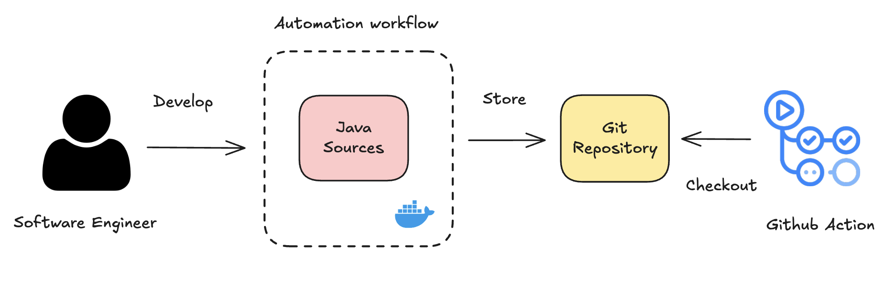
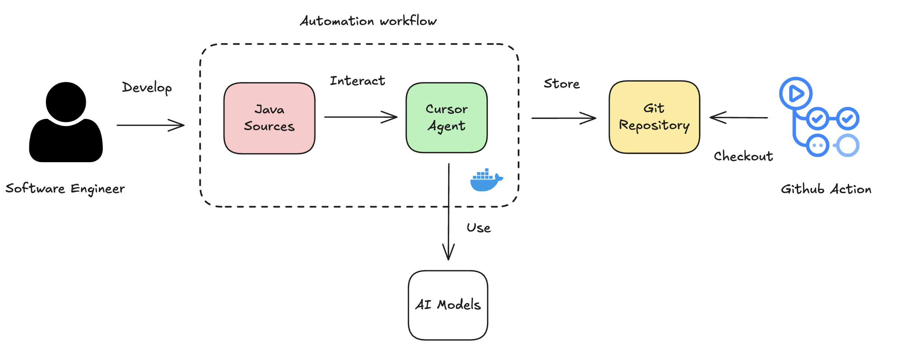
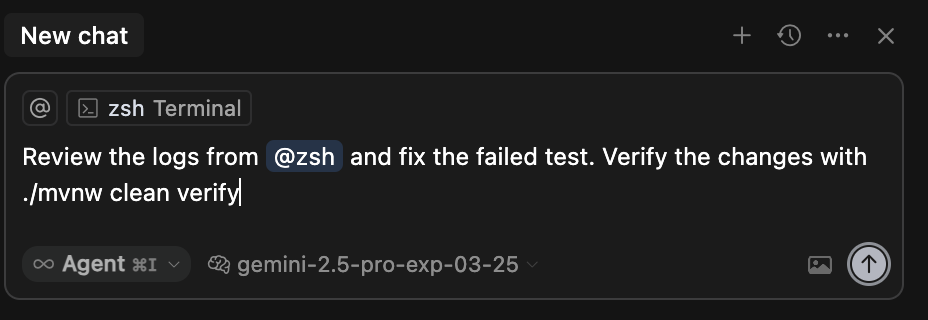
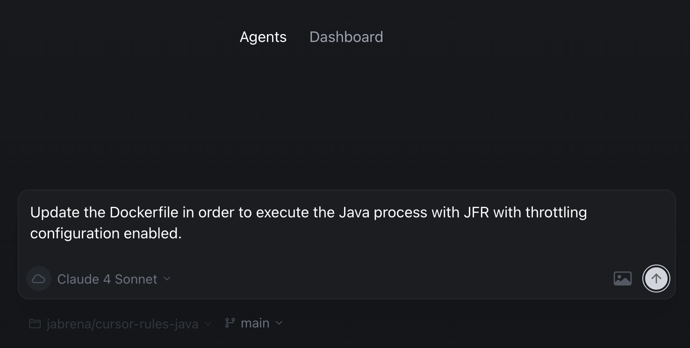

101 Cursor AI
Learning to use for Java Enterprise projects
v0.2.0-SNAPSHOT (30min talk)
Version control
- V3: W-JAX (2025/11/06)
- V2: Devoxx BE (2025/10/07)
- V1: Madrid JUG (2025/05/06)
"If you can't describe what you are doing as a process, you don't know what you're doing."
- W. Edwards Deming
"Trust, but verify"
- Russian proverb
Who I am
|
|
Juan Antonio Breña Moral Software Engineering Manager @ Capital One, C1
Twitter | Github | LinkedIn |
|
"Make it work, make it right, make it fast." - Kent Beck "Lead me, follow me, or get out of my way.", "Pressure makes diamonds." - George S. Patton Jr. |
|
 Source: Leavitt's Alignment Model (1965) >> People, Process and Technology Framework
Source: Leavitt's Alignment Model (1965) >> People, Process and Technology Framework

This talk couldn't age well over time.
(The market evolves rapidly)
Poll
Can you raise your hand ✋, if you use Intellij Idea Ultimate?

Poll
Can you raise your hand ✋, if you have tried Cursor AI?
Poll
Can you raise your hand ✋, if you have tried Claude Code?
Poll
Can you raise your hand ✋, if you have tried Github Copilot?
Agenda (30min)
- Who I am
- Context
- Cursor platform
- Data privacy notes
- Demos
- Q&A
Context
Context
Cursor version used for the talk:
ThoughtWorks Radar 2025Q1 // Tools
 Source: https://www.thoughtworks.com/radar/tools/summary/cursor
Source: https://www.thoughtworks.com/radar/tools/summary/cursor
 Source: https://www.infoq.com/articles/architecture-trends-2025/
Source: https://www.infoq.com/articles/architecture-trends-2025/

Really? 😳 🤔
Cursor platform
Cursor little by little is increasing the opportunities to use in Organizations with features for:
- For Software Engineers
- For Data pipelines
Cursor platform
For Software Engineers:
- Cursor AI
- Intellij Idea Ultimate + Cursor Agent CLI
- VSCode + Cursor Agent CLI
- DevContainers + Cursor Agent CLI
- Cursor Web/Mobile
Cursor platform
For Data pipelines:
- Cursor Agent CLI
- Cursor Background Agents API
Cursor platform
For Software Engineers: AS IS

Cursor platform
For Software Engineers: TO BE
 Source: Cursor AI
Source: Cursor AI
Cursor platform
For Software Engineers:
 Source: https://cursor.com/agents
Source: https://cursor.com/agents
Cursor platform
For Data pipelines: AS IS
Cursor platform
For Data pipelines: TO BE
 Source: Cursor CLICursor platform
For Data pipelines: TO BE
 Source: Cursor Background Agent
Source: Cursor Background Agent
Data privacy notes
- Security features
- Privacy mode
- Trust
Privacy mode

Note: with a Pro account, the developer needs to disable. But with a Business account, this feature is handle at the organization level.
Source: https://www.cursor.com/privacyTrust
Cursor operates a continuously monitored and 3rd-party audited security program.

SOC 2 is a compliance framework used to evaluate and validate an organizations
information security practices.
Demos
- Software Engineer features
- Tab model
- Models
- Cursor rules
- Modes (Agent, Ask & Background)
- Data pipelines features
- Cursor Background Agents API
Tab model
Tab completion in Cursor is powered by advanced AI models that understand your code context. As you type, you'll receive intelligent suggestions that:
- Complete your current line of code
- Suggest entire function implementations
- Help with common patterns and boilerplate
- Adapt to your coding style over time
Source: https://www.cursor.com/blog/tab-update

Models
Cursor provides access to latest Commercial LLMs

Source: https://docs.cursor.com/settings/models
Cursor rules
Using rules in Cursor you can control the behavior of the underlying model. You can think of it as instructions and/or a system prompt for LLMs.
Source: https://docs.cursor.com/context/rulesCursor rules
Analogy: In the organizations, exist a specific expert set of roles with the title of IT Champions who define the guidelines for a specific Technology, in our case Java.
Cursor rules
Where I can find specific cursor rules for Java?
How to apply them in my repository? $(pwd).cursor/rules
sdk install jbang
jbang cache clear
jbang catalog list jabrena
jbang setup@jabrena init \
--cursor https://github.com/jabrena/cursor-rules-java
If you have good ideas, PRs are welcome. 🙏🙏🙏
Modes

Natural language interface for exploring, editing, and managing code with contextual AI assistance in Chat mode.
Source: https://cursor.com/docs/agent/modesAsk Mode
- Ask questions about specific code sections
- Get explanations of complex functions
- Find code patterns and examples
- Discover and understand your codebase
Ask Mode
| 2000's | 2010's | 2024+ |
|---|---|---|
| Books | Google, StackOverflow, Blogs, etc... | ChatGPT, Cloude, Gemini... |
 |
Agent Mode
- Make codebase-wide changes and refactoring
- Implement new features from requirements
- Debug complex issues across multiple files
- Generate tests and documentation
- Maintain consistency across your entire project
Agent Mode
Example to fix a test:

Background agents
Using the Background Agents, you can run tasks in the background. Agent autonomously explores your codebase, edits multiple files, runs commands, and fixes errors to complete your requests.
Source: https://cursor.com/docs/agent/modes#agentBackground agents
 Source: https://cursor.com/agents
Data pipelines features
Using the Background Agents, you can run tasks in the background to automate some complex tasks in your codebase.
Data pipelines features
Slides
jbang trust list
jbang cache clear
jbang catalog list jabrena
jbang qr-code@jabrena \
--url https://jabrena.github.io/101-cursor/
🙏 🙏 🙏
Thanks